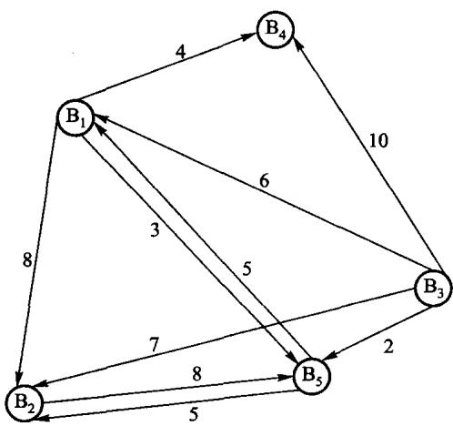
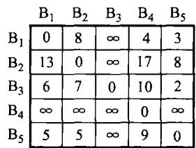
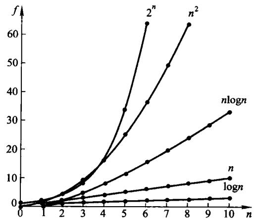

这门课到底在教什么
先用一个真问题把三者串起来。
某交易所有若干经纪人，消息只在认识的人之间传，每传一步花的时间不同。
要回答的是：

| 现实 | 抽象成 |
|---|---|
| 经纪人 | 顶点 |
| 「A 认识 B」 | 边 |
| 传一步花的时间 | 边上的权 |
| 从 s 放风到所有人知道 | s 到最远那个顶点的最短路 |
最后一行是全题的关键：要的不是平均，是最慢的那一项—— 消息传完的时刻由最后一个知道的人决定。
相邻矩阵：m[i][j] 是 i 到 j 一步的时间，不通就是「无穷大」。

第 7 章会讲另一种存法（邻接表），以及为什么没有哪种总是更好。
对每一对 (i, j)，问「允许经过前 k 个顶点中转时，最短是多少」：
d[k][i][j] = min( d[k-1][i][j] , d[k-1][i][k] + d[k-1][k][j] )
不经过 k 经过 kk 从 0 数到 V-1，答案就是 d[V-1]。代价 O(V3)，与边数无关。
[[nodiscard]] std::optional<std::size_t> best_source() const {
auto shortest = distance_;
for (std::size_t via = 0; via < shortest.size(); ++via) {
for (std::size_t from = 0; from < shortest.size(); ++from) {
for (std::size_t to = 0; to < shortest.size(); ++to) {
if (shortest[from][via] != infinity &&
shortest[via][to] != infinity &&
shortest[from][to] > shortest[from][via] + shortest[via][to]) {
shortest[from][to] = shortest[from][via] + shortest[via][to];
}
}
}
}
std::optional<std::size_t> result;
int smallest_eccentricity = infinity;
for (std::size_t from = 0; from < shortest.size(); ++from) {
int largest_distance = 0;
for (int distance : shortest[from]) {
largest_distance = distance > largest_distance ? distance : largest_distance;
}
if (largest_distance < smallest_eccentricity) {
smallest_eccentricity = largest_distance;
result = from;
}
}
return result;
}先跑 Floyd，再对每个起点取这一行的最大值，最后在所有起点里取最小。
| 层次 | 回答什么 | 例子 |
|---|---|---|
| 逻辑结构 | 元素之间有什么关系 | 线性、树形、图 |
| 存储结构 | 关系怎么落到内存里 | 顺序、链接、索引、散列 |
| 运算 | 能对它做什么 | 插入、删除、检索 |
同一个逻辑结构可以有多种存储结构——线性表既能顺序存（顺序表）， 也能链接存（链表），这就是第 2 章的全部内容。
两条分界线：
| 方法 | 怎么表示「相邻」 | 代价 |
|---|---|---|
| 顺序 | 地址相邻 | 按下标 O(1)；插删要搬 |
| 链接 | 指针相指 | 插删只改指针；按位置要走 |
| 索引 | 另造一张表，存地址 | 多一份空间；换来快速定位 |
| 散列 | 由关键码算出地址 | 期望 O(1)；不保序，会冲突 |
存储区的数据 -- 物理无序, 而且每块长度不等
+----------------+----------+------------+--------------+--------+
| [1] 73 | [2] 52 | [3] 42 | [4] 98 | [5] 37 |
+----------------+----------+------------+--------------+--------+
线性索引 -- 附加在数据之外的一张小表
+------+------+------+------+------+
| 37 | 42 | 52 | 73 | 98 | 关键码: 升序
+------+------+------+------+------+
| [5] | [3] | [2] | [1] | [4] | 指向第几块: 乱序
+------+------+------+------+------+这两行的错位就是索引的全部意义：上面能二分，下面一块没搬过。
ADT = 一组运算 + 它们的约定，不是一个类，更不是一个基类。
ADT 名字 {
数据对象 D: 结点是什么
数据关系 R: 结点之间有什么关系
基本操作 P: 对外提供哪些运算
}用它的人只能通过这些运算访问数据，不能去翻内部表示—— 所以换实现不用改调用方。
算法是对求解过程的描述：具体、有限的操作步骤。四条性质缺一不可。
| 性质 | 要求 | 违反时长什么样 |
|---|---|---|
| 通用 | 凡符合声明类型的输入都能求解且正确 | 只对书上那组样例成立 |
| 有效 | 每一步都是人或机器能确切执行的动作 | 出现「想办法算出 X」这种话 |
| 确定 | 做完这一步，下一步是什么必须说死 | 停在被锁住的状态 |
| 有穷 | 有限步内停机 | 死循环 |
指令条数有限 ≠ 执行步数有限——循环条件写错，5 行也能转个没完。 结束条件要单独检查。
程序是算法落在某种语言里的样子。一个对某类输入会永远循环的程序， 不是那个问题的算法。
| 方法 | 做法 | 本书哪里用 |
|---|---|---|
| 穷举 | 把有限的候选按固定顺序一一列出来检查 | switch 就是小范围穷举 |
| 回溯 | 枚举候选；不可能成功就退回上一步换下一个 | 第 3 章背包，第 5–7 章深度优先 |
| 分治 | 剖成同类的小问题，分别解，再合并 | 第 8 章快排/归并，第 10 章二分 |
| 递归 | 子问题是原问题的缩小版时的自然写法 | 与分治常常成对出现 |
| 贪心 | 每步按局部最优做不可撤回的选择 | 第 7 章 Prim、Kruskal、Dijkstra |
| 动态规划 | 子问题重叠，算过的存表备查 | 第 7 章 Floyd，第 12 章最优 BST |
贪心能不能用，全看度量标准选得对不对；动态规划针对的是 「按分治递归会把同一子问题算很多次」。
1.1 节要任意两点最短路、顶点又少，所以选 Floyd， 而不是对每个起点跑一遍 Dijkstra。
程序跑多久跟机器、编译器、输入都有关。要比较算法而不是这次运行， 就只能看「输入变大时，代价怎么涨」。

| 记号 | 含义 | 日常说法 |
|---|---|---|
| O(f) | 增长不快于 f | 上界 |
| Ω(f) | 增长不慢于 f | 下界 |
| Θ(f) | 上下界都是 f | 恰好这么快 |
平时说「这个算法是 O(n log n)」，严格说往往应该是 Θ。 说 O 永远不会错，只是可能说少了。
以顺序检索为例，表长 n：
| 情况 | 比较次数 |
|---|---|
| 最好 | 1（第一个就是） |
| 最坏 | n（不在表里） |
| 平均（等概率） | 1n(1+2+⋯+n)=n+12 |
平均情况依赖于输入的概率分布——等概率只是一个假设，不是事实。
本书里这条折衷反复出现：
| 章 | 折衷在哪 |
|---|---|
| 第 2 章 | 链表每个结点多一根指针，换来 O(1) 插删 |
| 第 6 章 | 双链表多一根 prev，换来 O(1) 删除已知结点 |
| 第 10 章 | 散列表用空闲槽位换期望 O(1) 检索 |
| 第 11 章 | 索引用附加空间换少读盘 |
第一问：这份数据上要做哪些运算？
第二问：规模多大、数据在哪一层存储？
一次磁盘 I/O 往往比一次内存比较贵几个数量级—— 所以第 9、11 章数的是访外页数，不是比较次数。
回到 1.1 节：只有五个经纪人、要任意两点最短路 → 相邻矩阵 + Floyd，实现简单，n=5 时三重循环可以忽略。
换成顶点很多、边很少、只问单源 → 就该是邻接表 + Dijkstra。
同一个问题，规模一变，答案就变。 后面每一章都会再做一次这样的取舍。
python3 tools/check_code.py code/ch01/adtcode/ch01/adt/modern.hpp，找出 infinity 为什么不取 INT_MAXk 循环挪到里层，看哪条断言变红全书的判据都是一样的：把实现改回错的写法，必须有一条断言会红。
放映快捷键
→ / 空格下一页 ←上一页 Home / End首尾
N演讲者备注 O缩略图总览 F全屏 D深色
?这张帮助 Esc关闭
导出 PDF：浏览器打印（Ctrl/Cmd+P），每页一张幻灯片。